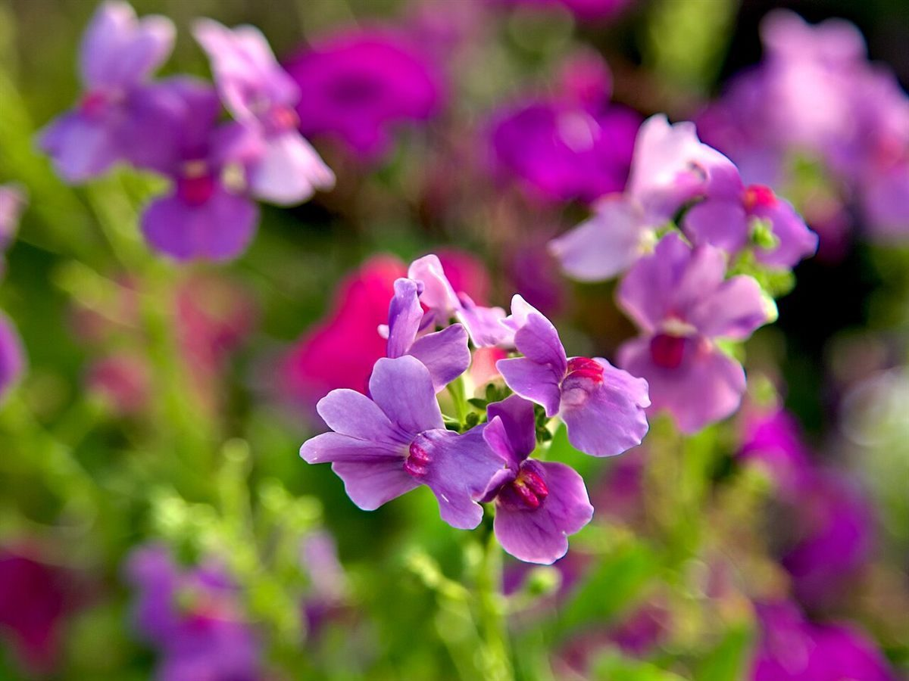
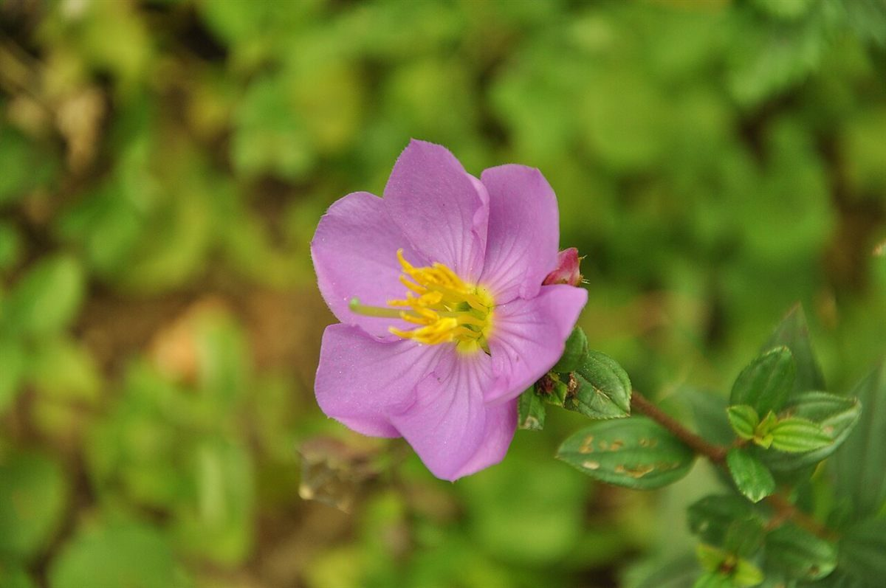
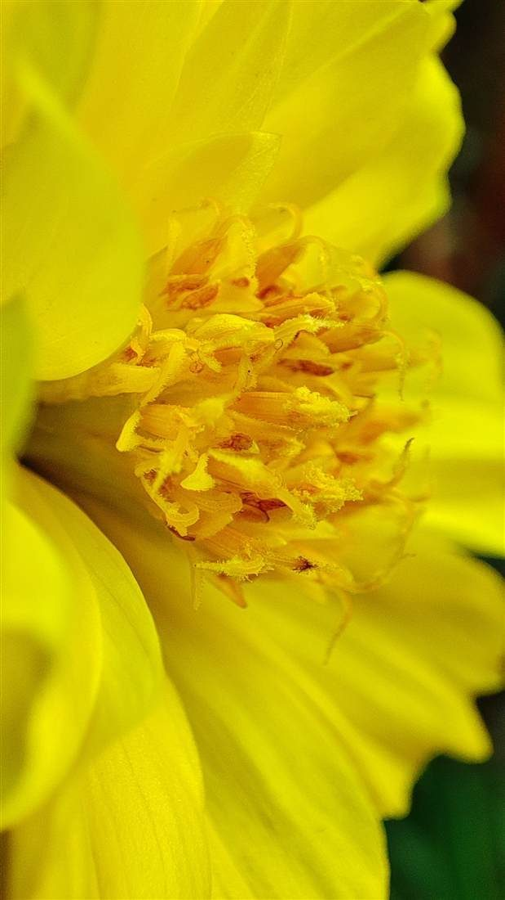
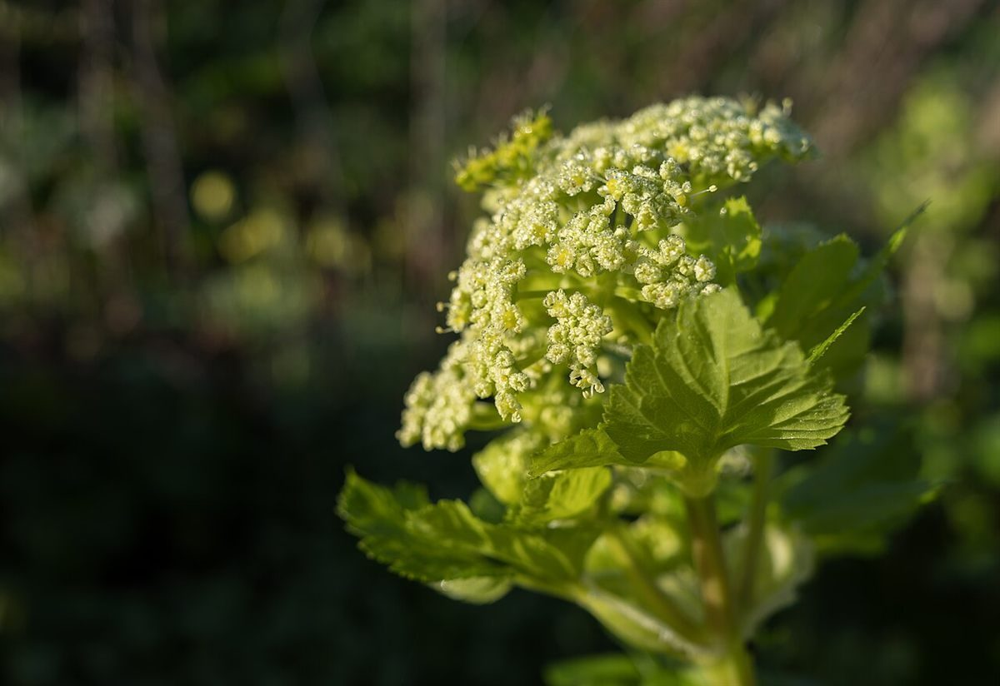
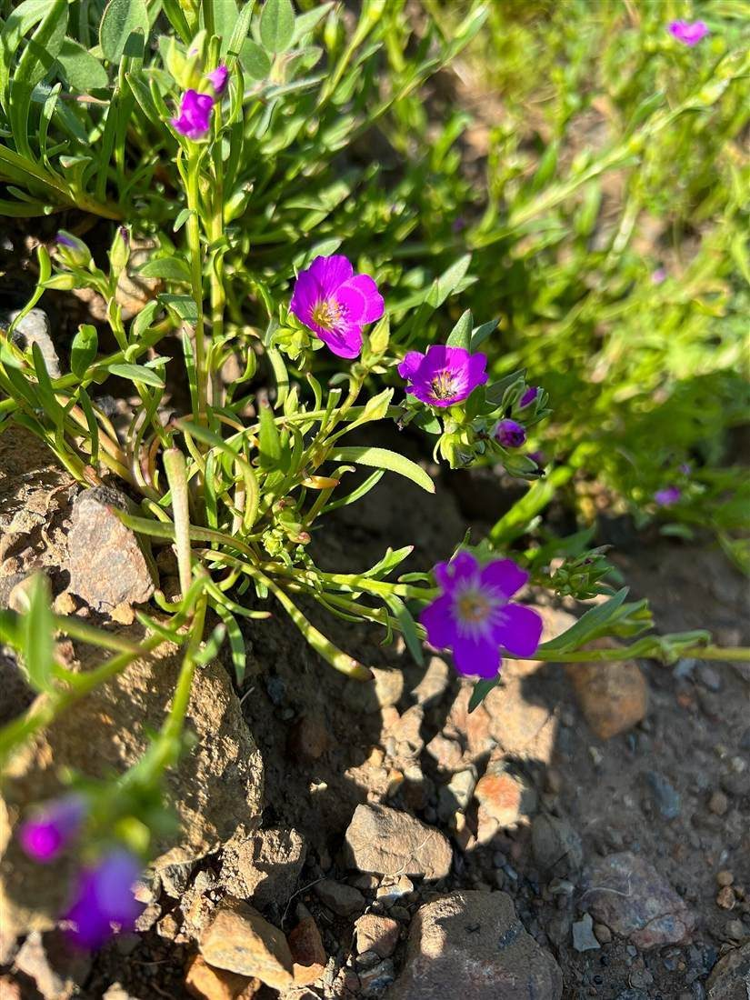
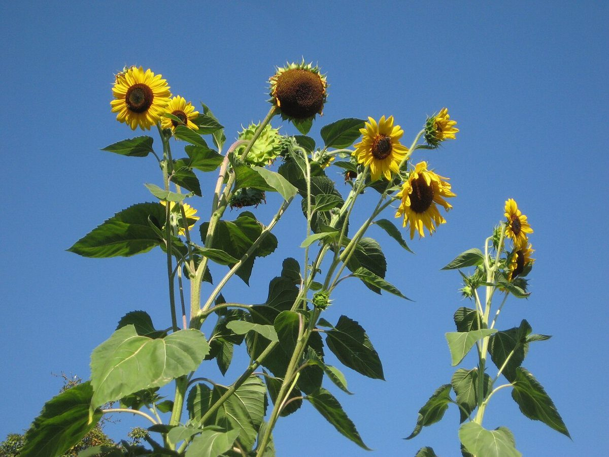
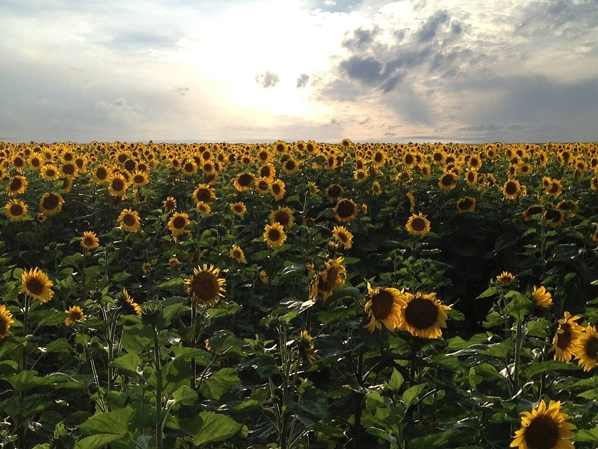
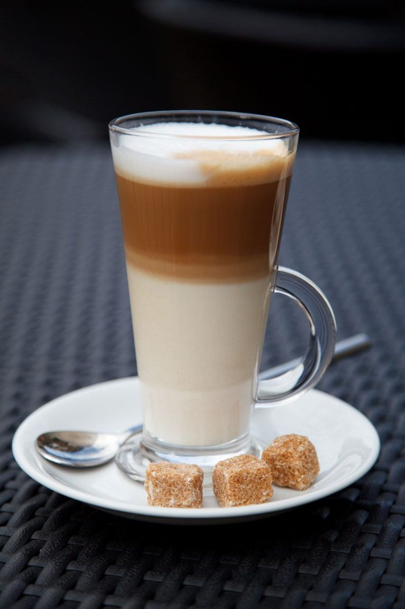

カフェ / 鹿児島県薩摩川内市
花Cafeづん
鹿児島県薩摩川内市百次町のカフェ「花Cafeづん」のご案内ページです。営業時間やメニューなど、詳しいことは準備中。まずはInstagramをのぞいてみてください。

1
2 3
3
4 5
5 6
6
7
8 9
9
10
11
12制作側の連想
「花」と時計の文字盤
お店の名前から、制作側は花を時刻ごとに並べた「花時計」を連想しました。それでこのサイトは、花の写真を1時から12時まで文字盤のように並べ、ページごとに時計の針の向きを変える作りにしています。制作側の連想で、お店の理念・由来とは無関係です。店名の由来は分かりません。
12枚の花
文字盤の花の一覧
写真は薩摩川内市のものではなく、国外または撮影地不明のフリー素材のイメージです。
- 1時紫の小花
- 2時薄紫の一輪
- 3時赤いチューリップ畑
- 4時黄色い花
- 5時ユリの花
- 6時ピンクのガーベラ
- 7時黄緑の花房
- 8時岩場の野の花
- 9時青い小花
- 10時青空のひまわり
- 11時ひまわり畑
- 12時ラテ(イメージ)
ご案内
お店のこと(確認できたものだけ)
| 所在地 | 〒895-0007 鹿児島県薩摩川内市百次町350-2 |
|---|---|
| 電話 | 090-9477-0445 |
| 営業時間 | 準備中 |
| 定休日 | 準備中 |
| ご予約 | 準備中 |
| 駐車場 | 準備中 |
| SNS | Instagram @hanacafe_dun |